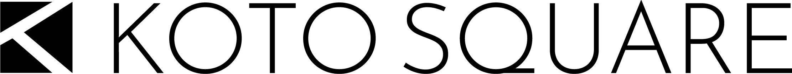

01
TRUE
正しいと信じた方法を、提案する
その場しのぎの施策ではなく、クライアントにとって正しいと信じられる方法をご提案します。

TRUECONSTANTKOTO²
WEBサイトの制作・運用から、
WEBマーケティング支援、動画広告、
商品開発まで。正しいと信じた方法を、
クライアントのために何度でも
提案・実行し続けます。
01STRENGTH
ロゴの3つのピースは、
私たちが大切にしている3つの考え方です。
ひとつ欠けても、Kの形にはなりません。
01
TRUE
その場しのぎの施策ではなく、クライアントにとって正しいと信じられる方法をご提案します。
02
CONSTANT
提案して終わりにせず、実行と見直しを何度でも重ねながら、クライアントと同じ方向を向いて進みます。
03
SQUARE
WEBサイト・WEBマーケティング・動画広告・商品開発。領域をまたぐ課題も、まとめてご相談いただけます。
02OUR NAME
「正しいと信じた方法（true）を、何度でも（Constant）クライアントのために提案・実行し続けることで物事はうまく行く」という信念を込めて命名しました。
Constantの「コ」× trueの「ト」を繰り返しやり続ける＝「コトの2乗（Koto Square）」です。
Constant × true
Koto2
コ × ト を、繰り返しやり続ける。
03SERVICE
4つの領域で、クライアントの課題に向き合います。
気になる領域から、そのままご相談いただけます。
01 — WEB PRODUCTION
サイトの設計・制作から、公開後の運用までを担当します。
この領域について相談する
02 — WEB MARKETING
WEBを活用した集客・販促の取り組みを支援します。
この領域について相談する
03 — VIDEO ADS
動画広告の制作から、配信後の運用までを担当します。
この領域について相談する
04 — PRODUCT DEV.
商品の企画・開発を支援します。
この領域について相談する
どの領域に当てはまるか
分からなくても大丈夫です。
まずは現状のお困りごとをお聞かせください。
04WORKS
05NEWS
06COMPANY